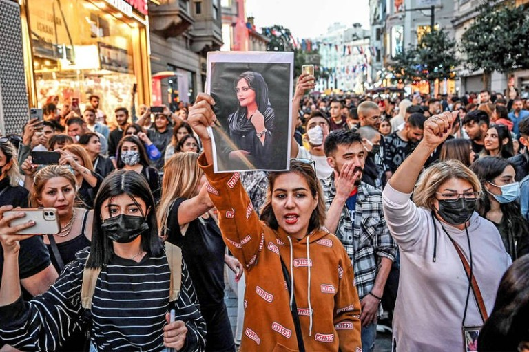

On 13 September, Masha Amini, 22, a student who was traveling with her family to Tehran on a visit from Kurdistan, western Iran, was questioned by police. It was not an ordinary police officer, but a moral police officer in charge of cracking down on public morals. Masha was taken to a re-education center, with charges of not wearing a hijab properly in the vehicle. After an hour of retraining, I was promised to send it back. However, Marsha, who entered the training center, was taken to a hospital unconscious and died on September 16.
Police denied the physical hit and officially announced that he suddenly collapsed alone. A heart
attack was identified as a cause of death. Authorities said there was no violence, and government
neurosurgeons suggested the possibility of aftereffects of brain surgery as a child. However, the
bereaved families raised strong questions about the sudden death of a healthy 22-year-old woman from
a heart attack and demanded a fact-finding mission. Some witnesses testified to the beating in the
interrogation room, and the truth game battle took place.
Meanwhile, the victim's medical records were leaked. Some doctors, who saw this, suspected the
possibility of a skull rupture due to a combined strike and demanded a government-level fact-finding
investigation. President Ebrahim Raisi, vice president of women's affairs, and Martha's hometown
governor immediately comforted the bereaved family and vowed to do their best to find out the truth
and hold them accountable if necessary. Even the highest-ranking official of the Islamic advisory
body has stepped up. Despite the government's vow to investigate the case, women took to the streets
in anger. Shaving and hijab incineration protests spread to 80 cities across Iran.

The protests are becoming more widespread. Beyond genders, it is spreading to a mixed protest that
encompasses generations, classes and minorities. The international community is watching whether it
will end similar to the unfinished "green revolution" triggered by the Iranian presidential election
controversy in 2009, or whether the "Arab Spring," which began with a young Tunisian's suicide in
2010, will pose a serious threat to the Iranian system. The protests have already gone beyond Iran.
With more than 100 million retweets, international solidarity is taking place on social media. The
United Nations also intervened. Senior human rights leader Nada Al-Nashif is pressing the Iranian
government for an independent investigation.